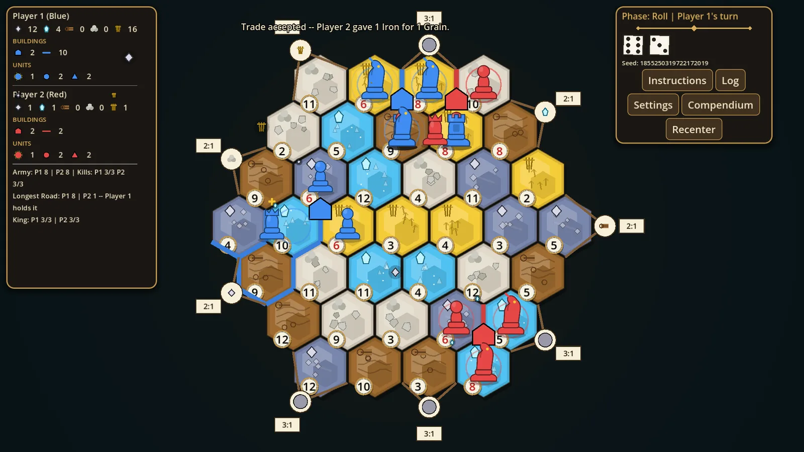
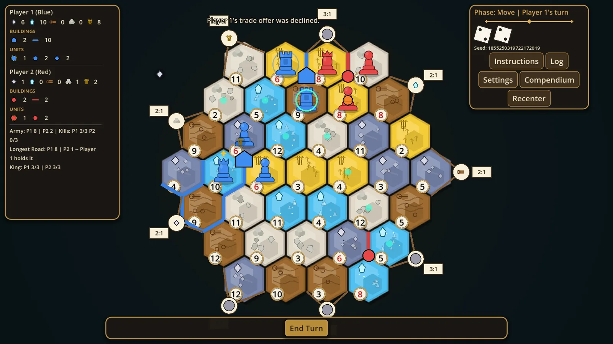
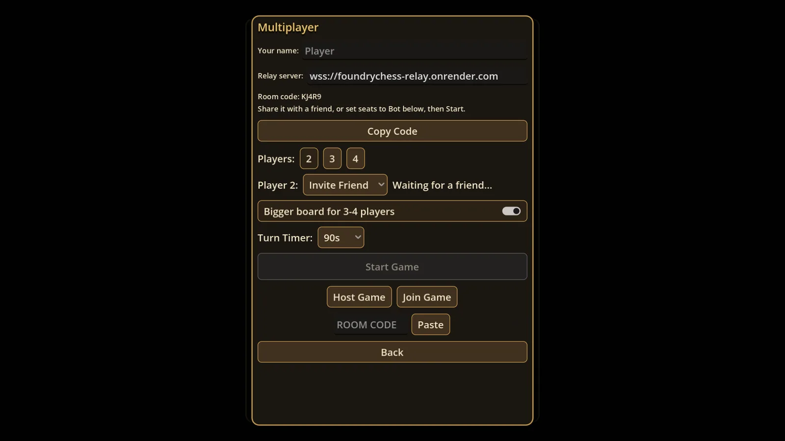
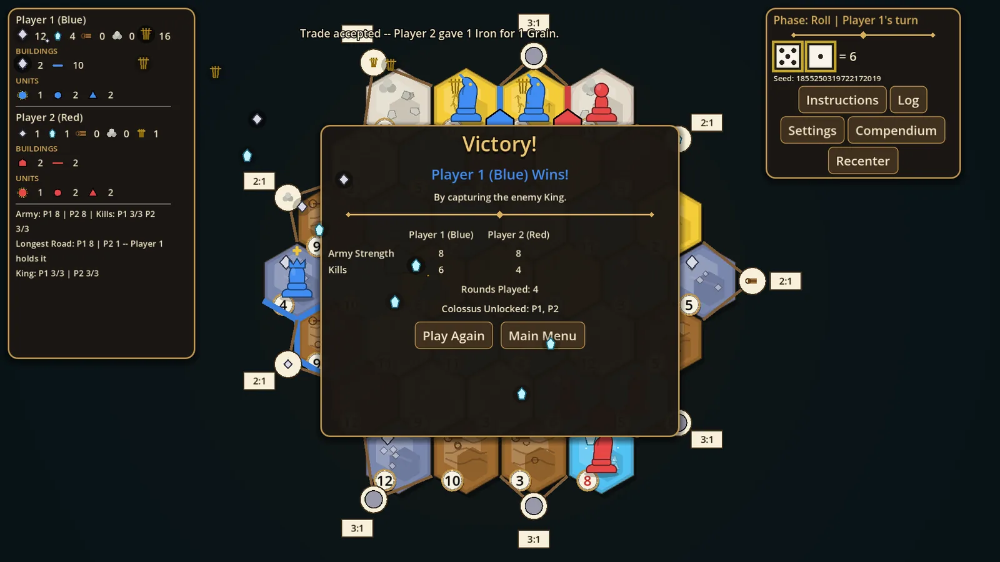

ChessTan
Hex-grid strategy: a settle-and-trade economy under chess-style movement and capture, for 2 to 4 players, hot-seat, against the AI, or online.
- Role
- Solo developer. Design, rules engine, netcode, the relay server, and the Steam launch.
- Stack
- Godot 4.7, GDScript, WebSocket relay on Render.com, Steam, Discord Activity
Steam (opens in a new tab) Play in browser (opens in a new tab)
The problem
Two systems that usually live in different games share one board, so a good economy can still lose to a bad position. Online, the hard part is a player whose connection drops mid-turn: two clients that disagree about the board end the game, and a relay that forgets state loses the match.
What I built
The game runs host-authoritative: one client owns the board and the relay carries the moves, so the players cannot desync. A dropped player reconnects and resyncs from the host's state instead of restarting. The same codebase ships as a Steam release, a browser build, and a Discord Activity. Free on Steam since 19 September 2026.